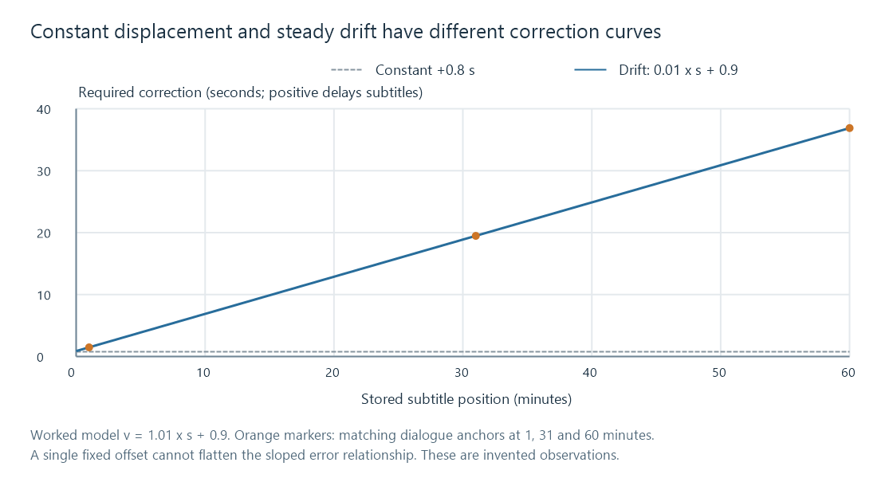

Subtitle timing drift
Subtitle timing drift is a growing synchronization difference caused by a time-scale mismatch or another changing relationship between subtitles and the programme.
A subtitle can match the opening and then slowly move away from the speech. That pattern is drift: the required correction changes with programme position. Moving every cue by one constant amount can fix one point while leaving the rest wrong.
The first useful evidence is several matched moments—not just the displayed duration of the whole file. Choose recognizable dialogue in the subtitle and the corresponding speech in the actual movie.
Measure matching events, not arbitrary nearby lines
Let s be the stored subtitle time and v the corresponding intended movie time. The correction required at that event is v − s. A positive value means the stored cue is early and must move later.
Here is an invented set of observations:
| Event | Stored subtitle time s | Intended movie time v | Required correction |
|---|---|---|---|
| Opening line | 60.0 s | 61.5 s | +1.5 s |
| Later line | 1,860.0 s | 1,879.5 s | +19.5 s |
| Test line | 3,600.0 s | 3,636.9 s | +36.9 s |
The correction grows. It cannot be explained by one +1.5-second offset.

Matching the wrong repeated sentence or measuring a different speaker's adjacent line corrupts the anchors. The calculation is only as useful as those correspondences.
Solve a scale and an offset
For a sequence that differs by one constant rate and one origin shift, use:
v = a × s + b
The two first anchors give:
a = (v2 − v1) / (s2 − s1)
= (1879.5 − 61.5) / (1860 − 60)
= 1818 / 1800
= 1.01
b = v1 − a × s1
= 61.5 − 1.01 × 60
= 0.9 seconds
The corrected time is 1.01 × s + 0.9. The required adjustment is therefore 0.01 × s + 0.9.
For a cue from 600 to 602.5 seconds:
| Boundary | Corrected result |
|---|---|
| Start | 1.01 × 600 + 0.9 = 606.9 s |
| End | 1.01 × 602.5 + 0.9 = 609.425 s |
| Duration | 2.525 s |
The duration grows by the same factor of 1.01. Adding only the calculated start correction to both boundaries would preserve the old duration, producing a different transformation.
This is a timing-model example, not a claim that every drift needs a 1% adjustment.
The third anchor tests the model
The equation predicts the test line at 3,636.9 seconds, matching the third observation. Additional observations near the middle and across scene changes should also fit within the expected authoring and rounding differences.
For each event, calculate a residual:
residual = observed movie time − predicted movie time
Small scattered residuals can reflect authoring judgments or finite timestamp precision. A sudden persistent jump suggests an edit difference. A changing slope suggests more than one rate relationship. No single affine model can explain every such sequence.
Using widely separated reliable anchors makes the rate estimate less sensitive to a small timing error on one line. If two anchors are just ten seconds apart, a 0.2-second uncertainty strongly affects the slope; over 1,800 seconds, its influence is much smaller. More anchors can support a fitted model and expose outliers.
A frame-rate mismatch has a predictable factor
Suppose subtitles were timed to a programme running at 24 fps, and the same source frames are played at 25 fps without changing their count. For frame number n:
stored time s = n / 24
movie time v = n / 25
therefore v = (24/25) × s = 0.96 × s
A source event at s = 600 seconds now belongs at 576 seconds. At s = 3,600 it belongs at 3,456 seconds. The required corrections are −24 and −144 seconds.
That exact ratio follows from the specified frame playback change. It should not be applied merely because one file reports 24 and another reports 25: a frame-rate conversion can preserve duration by adding or repeating frames. Frame-based timing explains that distinction.
Likewise, 24 and 24000/1001 fps differ by a much smaller factor that still accumulates over a long programme. Treat the fractional rate exactly rather than as the rounded decimal label when doing the calculation.
Drift or a different movie edit?
If a subtitle matches until an extra scene or a different opening logo, the error can change in a step. Stretching the whole track to make its final line match will then disturb lines that were already right.
For Emby, compare the selected subtitle against the actual edition being played. A constant rate/origin correction works when the content relationship is constant. A different sequence of scenes needs a piecewise edit map, replacement subtitles for that edition, or manual retiming of the affected material.
See Also
- Subtitle time offsets
- Frame-based subtitle timing
- Subtitle edition mismatches
- Fractional Frame Rates: 23.976, 29.97, and 59.94